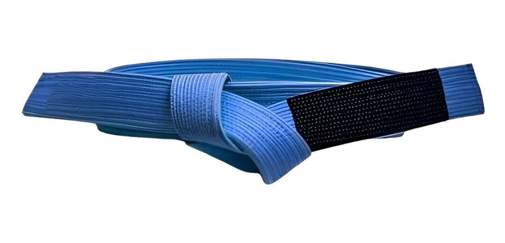

| Faixas de Jiu-jitu |
Menu de compra |
Menu de Faixas |

A faixa azul é a primeira no sistema adulto. Ela indica que o praticante tem um conhecimento sólido das técnicas básicas e está pronto para explorar variações mais avançadas. O azul é a cor do céu, representando a vastidão do conhecimento ainda a ser explorado.
Nosso endereçoRua Garcês, s/n - Bairro Vila Maria, Barra do Garças - MT |
Criador do sitePedro Henrique Duthevicz de FariaAluno do 3 ano B de informáticaAluno do CowBoy Jiu-Jitsu |
InstituiçãoIFMTInstituto Federal do Estado de Mato Grosso |